Introduction
The package bvartools implements functions for Bayesian
inference of linear time series models with a focus on vector
autoregressive (VAR) and vector error correction (VEC). It separates a
typical analytics workflow into multiple steps:
-
Model set-up
- Produce data matrices for given lag orders and model types, which can be used for posterior simulation. This includes a set-up for expanding window estimation.
- Set prior hyperparameters either manually or based on established approaches such as the Minnesota prior.
- Set initial values based on maximum likelihood estimates or drawing from a prior.
-
Posterior simulation
- Perform posterior simulation of coefficients, forecasts and likelihoods using algorithms from the BayesTS library.
- Researchers can also choose to use they own algorithms.
-
Evaluation
- Traditional summary statistics for individual coefficients
- In-sample performance measures (LL, AIC, BIC, HQ, WAIC, LOOIC)
- Out-of-sample performance (MAFE, RMSFE)
-
Application
- Forecasts
- Impulse response functions
- Forecast error variance decomposition
In each step researchers are provided with the opportunity to fine-tune a model according to their specific requirements or to use the default framework for commonly used models and priors. Since version 1.0.0 the package includes simulation functions from the BayesTS C++ library.
For Bayesian inference of VAR models the package covers
- Standard BVAR models with independent normal-Wishart priors
- BVAR models employing stochastic search variable selection à la Gerorge, Sun and Ni (2008)
- BVAR models employing Bayesian variable selection à la Korobilis (2013)
- Structural BVAR models, where the structural coefficients are estimated from contemporary endogenous variables (A-model)
- Stochastic volatility (SV) of the errors à la Kim, Shephard and Chip (1998)
- Time varying parameter models (TVP-VAR)
- Bayesian quantile VARs, which estimate a conditional quantile instead of the conditional mean, à la Kozumi and Kobayashi (2011)
For Bayesian inference of cointegrated VAR models the package implements the algorithm of Koop, León-González and Strachan (2010) [KLS] – which places identification restrictions on the cointegration space – in the following variants
- The BVEC model as presented in Koop, León-González and Strachan (2010)
- The KLS model employing stochastic search variable selection à la Gerorge, Sun and Ni (2008)
- The KLS modol employing Bayesian variable selection à la Korobilis (2013)
- Structural BVEC models, where the structural coefficients are estimated from contemporaneous endogenous variables (A-model). However, no further restrictions are made regarding the cointegration term.
- Stochastic volatility (SV) of the errors à la Kim, Shephard and Chip (1998)
- Time varying parameter models (TVP-VEC) à la Koop, León-González and Strachan (2011)[^tvpvec]
For Bayesian inference of dynamic factor models the package implements the althorithm used in the textbook of Chan, Koop, Poirer and Tobias (2019).
This introduction to bvartools provides the code to set
up and estimate a basic Bayesian VAR (BVAR) model.1 The first part covers
a basic workflow, where the standard posterior simulation algorithm of
the package is employed for Bayesian inference. The second part presents
a workflow for a posterior algorithm as it could be implemented by a
researcher.
Model set-up
Data
For both illustrations the data set E1 from Lütkepohl (2006) is used. It contains data on West German fixed investment, disposable income and consumption expenditures in billions of DM from 1960Q1 to 1982Q4. Like in the textbook only the first 73 observations of the log-differenced series are used.
library(bvartools)
# Load data
data("e1")
e1 <- diff(log(e1)) * 100
# Reduce number of oberservations
e1 <- window(e1, end = c(1978, 4))
# Plot the series
plot(e1)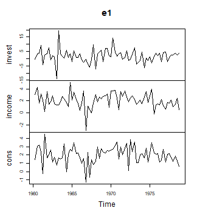
plot of chunk data
Setting up a model
The create_bvarmodel function produces an object, which
contains information on the specification of the VAR model that should
be estimated. The following code specifies a VAR(2) model with an
intercept term. The number of iterations and burn-in draws is already
specified at this stage.
model <- create_bvarmodel(e1, p = 2, deterministic = "const",
iterations = 5000, burnin = 1000)Note that the function is also capable of generating more than one
model. For example, specifying p = 0:2 would result in
three models.
Adding prior hyperparameters
Function add_priors produces priors for the specified
model(s) in object model and augments the object
accordingly.
model <- add_priors(model,
coef = list(v_i = 0, v_i_det = 0),
sigma = list(df = 1, scale = .0001))If researchers want to fine-tune individual prior specifications,
this can be done by directly accessing the respective elements in object
model_with_prior.
Adding initial values
Function add_initial_values adds initial values of
posterior coefficients to model_with_prior. The default
behaviour of the function is to obtain an LS estimate of the
coefficients.
# The seed of the posterior simulation is drawn here
set.seed(1234567)
model <- add_initial_values(model, method = "ols")Obtaining posterior draws
bvartools comes with built-in posterior simulation
functions from the BayesTS library. By
using function add_posterior_coefficients the model input
is forwarded to a posterior function and the output is added to the
original object:
model <- add_posterior_coefficients(model)If researchers prefer to use their own posterior algorithms, this can
be done by specifying argument posterior_function with a
function that uses object model as its input.
Evaluation
Inspect posterior draws
Posterior draws can be visually inspected by using the
plot function. By default, it produces a series of
histograms of all estimated coefficients.
plot(model)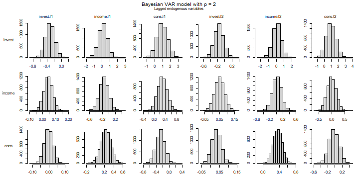
plot of chunk histograms
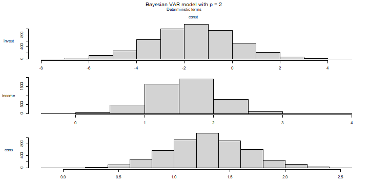
plot of chunk histograms
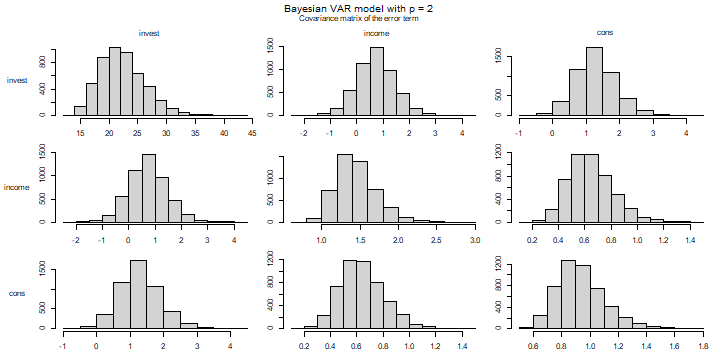
plot of chunk histograms
Alternatively, the trace plot of the post-burnin draws can be drawn
by adding the argument type = "trace":
plot(model, type = "trace")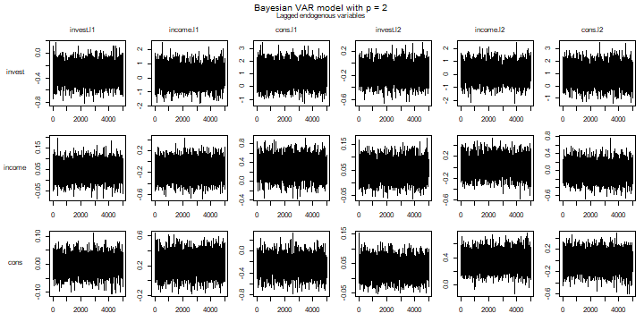
plot of chunk traceplots
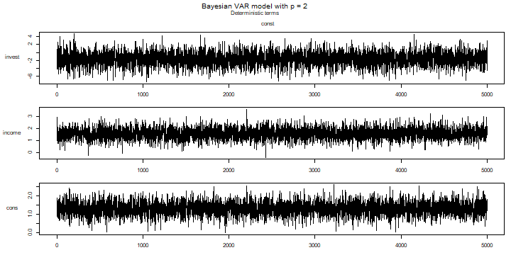
plot of chunk traceplots
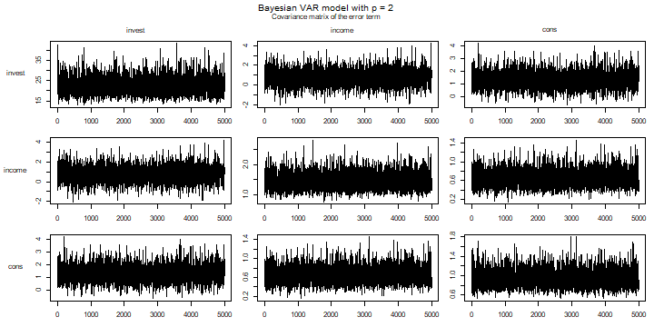
plot of chunk traceplots
Summary statistics
Summary statistics can be obtained in the usual way using the
summary method.
summary(model)
#>
#> Bayesian VAR model with p = 2
#>
#> Endogenous variables: invest, income, cons
#>
#> Variable: invest
#>
#> Mean SD Naive SD Time-series SD 2.5% 50%
#> invest.l1 -0.3203060 0.1279956 0.001810131 0.001810131 -0.5718547 -0.3201118
#> income.l1 0.1424317 0.5594494 0.007911809 0.007108336 -0.9691589 0.1441895
#> cons.l1 0.9642472 0.6724965 0.009510537 0.009646315 -0.3367044 0.9505872
#> invest.l2 -0.1613877 0.1295269 0.001831787 0.001776471 -0.4121541 -0.1612701
#> income.l2 0.1086389 0.5531500 0.007822723 0.007822723 -0.9933172 0.1096671
#> cons.l2 0.9361046 0.6707353 0.009485630 0.009738923 -0.3763424 0.9409542
#> const -1.6550115 1.7450633 0.024678922 0.024678922 -5.1628759 -1.6257428
#> 97.5%
#> invest.l1 -0.07193361 *
#> income.l1 1.23387932
#> cons.l1 2.31279819
#> invest.l2 0.09019922
#> income.l2 1.21134024
#> cons.l2 2.25209415
#> const 1.67946912
#>
#> Variable: income
#>
#> Mean SD Naive SD Time-series SD 2.5%
#> invest.l1 0.043942531 0.03298429 0.0004664683 0.0004664683 -0.01952417
#> income.l1 -0.152671388 0.14073254 0.0019902587 0.0019902587 -0.43313298
#> cons.l1 0.287757921 0.17146598 0.0024248951 0.0023350613 -0.04063613
#> invest.l2 0.049701368 0.03253800 0.0004601568 0.0004601568 -0.01376721
#> income.l2 0.019545148 0.13896774 0.0019653006 0.0019653006 -0.25121800
#> cons.l2 -0.009855836 0.17233068 0.0024371239 0.0024371239 -0.34587953
#> const 1.579222043 0.45618722 0.0064514615 0.0064514615 0.69651513
#> 50% 97.5%
#> invest.l1 0.04372061 0.1098251
#> income.l1 -0.15387455 0.1203594
#> cons.l1 0.28650831 0.6269482
#> invest.l2 0.04984610 0.1143634
#> income.l2 0.01942392 0.2960480
#> cons.l2 -0.01155792 0.3256886
#> const 1.57579759 2.4841305 *
#>
#> Variable: cons
#>
#> Mean SD Naive SD Time-series SD 2.5%
#> invest.l1 -0.001836747 0.02677417 0.000378644 0.0003882236 -0.054491820
#> income.l1 0.228459820 0.11543691 0.001632524 0.0014184958 0.001674708
#> cons.l1 -0.268580628 0.13948190 0.001972572 0.0019725720 -0.543925537
#> invest.l2 0.033544937 0.02635026 0.000372649 0.0003726490 -0.017926896
#> income.l2 0.356564581 0.11182527 0.001581448 0.0015814482 0.138655141
#> cons.l2 -0.025501264 0.14022460 0.001983075 0.0019830753 -0.295588927
#> const 1.300183022 0.36488084 0.005160194 0.0051601943 0.585607251
#> 50% 97.5%
#> invest.l1 -0.00170442 0.049108341
#> income.l1 0.22881767 0.450705708 *
#> cons.l1 -0.26627195 -0.001352864 *
#> invest.l2 0.03348491 0.085652005
#> income.l2 0.35673537 0.573623920 *
#> cons.l2 -0.02781087 0.250517570
#> const 1.29648603 2.028044414 *
#>
#> Variance-covariance matrix:
#>
#> Mean SD Naive SD Time-series SD 2.5%
#> invest_invest 22.3351407 4.0217605 0.056876282 0.062536333 15.7824157
#> invest_income 0.7227433 0.7380442 0.010437521 0.011472421 -0.7273071
#> invest_cons 1.2907978 0.6069315 0.008583307 0.009740524 0.1794817
#> income_income 1.4445651 0.2589445 0.003662028 0.004043948 1.0183738
#> income_cons 0.6434349 0.1685107 0.002383101 0.002631009 0.3614980
#> cons_cons 0.9353396 0.1683432 0.002380732 0.002624154 0.6632334
#> 50% 97.5%
#> invest_invest 21.9123711 31.176113 *
#> invest_income 0.7059832 2.234627
#> invest_cons 1.2550332 2.615498 *
#> income_income 1.4159077 2.031911 *
#> income_cons 0.6277095 1.009114 *
#> cons_cons 0.9153014 1.315926 *As expected for an algrotihm with uninformative priors the posterior means are fairly close to the results of the frequentist estimator, which can be obtaind in the following way:
# Obtain data for LS estimator
k <- model[["model"]][["k"]]
y <- t(model[["data"]][["train"]][["y"]])
x <- t(model[["data"]][["train"]][["x"]])
# Calculate LS estimates
A_freq <- tcrossprod(y, x) %*% solve(tcrossprod(x))
# Round estimates and print
round(A_freq, 3)
#> invest.01 income.01 cons.01 invest.02 income.02 cons.02 const
#> invest -0.320 0.146 0.961 -0.161 0.115 0.934 -1.672
#> income 0.044 -0.153 0.289 0.050 0.019 -0.010 1.577
#> cons -0.002 0.225 -0.264 0.034 0.355 -0.022 1.293Application
Forecasts
Forecasts are obtained in two steps. First, function
add_forecast_input generates the data of the forecast
periods, where deterministic terms can be provided in the argument
deterministic and unmodelled variables in the argument
exogen. If they are not provided, the function tries to
obtain them from the model and gives a message, if it does not succeed.
Second, function add_posterior_forecasts then simulates the
forecasts.
model <- add_forecast_input(model, n_ahead = 10)
model <- add_posterior_forecasts(model)Forecasts with credible bands can be extracted from the model using
the predict function. The n_ahead argument can
be used to set the given forecast horizon. However, the number of
available forecast periods is limited to specification used in
add_forecast_input.
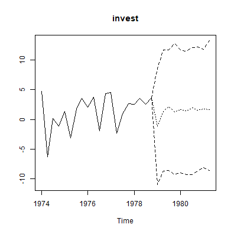
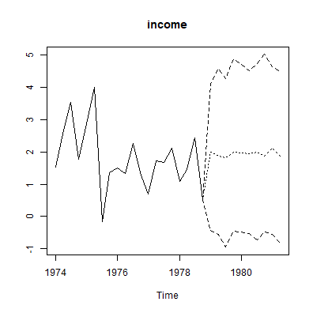
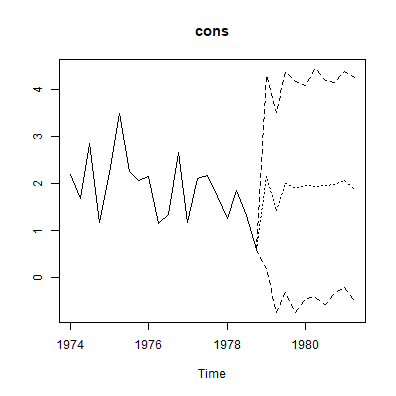
Impulse response analysis
bvartools supports commonly used impulse response
functions. See https://www.r-econometrics.com/timeseries/irf/
for an introduction.
Forecast error impulse response
FEIR <- irf(model, impulse = "income", response = "cons", n_ahead = 8)
plot(FEIR, main = "Forecast Error Impulse Response", xlab = "Period", ylab = "Response")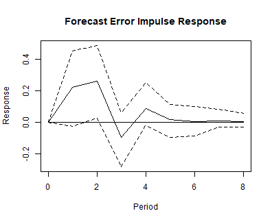
Variance decomposition
bvartools also supports forecast error variance
decomposition (FEVD) and generalised forecast error variance
decomposition.
Forecast error variance decomposition
bvar_fevd_oir <- fevd(model, response = "cons")
plot(bvar_fevd_oir, main = "OIR-based FEVD of consumption")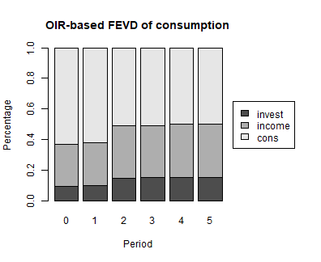
Generalised forecast error variance decomposition
It is also possible to calculate FEVDs, which are based on
generalised impulse responses (GIR). Note that these do not
automatically add up to unity. However, this could be changed by adding
normalise_gir = TRUE to the function’s arguments.
bvar_fevd_gir <- fevd(model, response = "cons", type = "gir")
plot(bvar_fevd_gir, main = "GIR-based FEVD of consumption")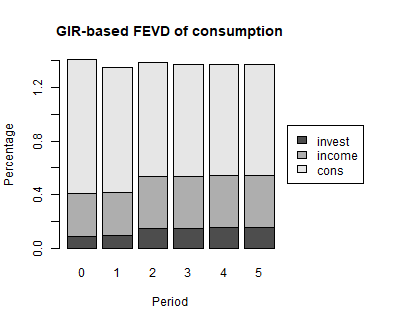
Using bvartools with user-written algorithms
bvartools was created to assist researchers in building
and evaluating their own posterior simulation algorithms for linear BVAR
models. Functions create_bvarmodel simply help to quickly
obtain the relevant data matrices for posterior simulation. Estimation
can be done using algortihms, which are usually implemented by
researchers themselves. But once posterior draws are obtained
bvartools can assist throughout in the following steps of
the analysis. In this context the main contributions of the package
are:
- Function
bvarcollects the output of a Gibbs sampler in a standardized object, which can be used for subsequent steps in an analysis. - Functions such as
predict,irf,fevdfor forecasting, impulse response analysis and forecast error variance decomposition, respectively, use the output ofbvarand, hence, researchers do not have to implement them themselves and can save time. - Computationally intensive functions - such as for posterior
simulation - are written in C++ using the
RcppArmadillopackage of Eddelbuettel and Sanderson (2014).2 This decreases calculation time and makes the code less complex and, thus, less prone to mistakes.
If researchers are willing to rely on the model generation and
evaluation functions of bvartools, the only remaining step
is to illustrate how user specific algorithms can be combined with the
functional framework of the package. This is shown in the remainder of
this introduction.
Model set-up and prior specifications
These steps are exactly the same as described above. Thus, the
following Gibbs sampler departs from object
model_with_priors from above.
A Gibbs sampler algorithm
# Reset random number generator for reproducibility
set.seed(1234567)
iterations <- 10000 # Number of saved iterations of the Gibbs sampler
burnin <- 5000 # Number of burn-in draws
draws <- iterations + burnin # Total number of MCMC draws
y <- t(model[["data"]][["train"]][["y"]])
x <- t(model[["data"]][["train"]][["x"]])
tt <- ncol(y) # Number of observations
k <- nrow(y) # Number of endogenous variables
m <- k * nrow(x) # Number of estimated coefficients
# Set (uninformative) priors
a_mu_prior <- model[["priors"]][["a"]][["mu"]] # Vector of prior parameter means
a_v_i_prior <- model[["priors"]][["a"]][["v_inv"]] # Inverse of the prior covariance matrix
u_sigma_df_prior <- model[["priors"]][["u_sigma"]][["df"]] # Prior degrees of freedom
u_sigma_scale_prior <- model[["priors"]][["u_sigma"]][["scale"]] # Prior covariance matrix
u_sigma_df_post <- tt + u_sigma_df_prior # Posterior degrees of freedom
# Initial values
u_sigma_i <- diag(1 / .00001, k)
# Data containers for posterior draws
draws_a <- matrix(NA, m, iterations)
draws_sigma <- matrix(NA, k^2, iterations)
# Start Gibbs sampler
for (draw in 1:draws) {
# Draw conditional mean parameters
a <- post_normal(y, x, u_sigma_i, a_mu_prior, a_v_i_prior)
# Draw variance-covariance matrix
u <- y - matrix(a, k) %*% x # Obtain residuals
u_sigma_scale_post <- solve(u_sigma_scale_prior + tcrossprod(u))
u_sigma_i <- matrix(rWishart(1, u_sigma_df_post, u_sigma_scale_post)[,, 1], k)
# Store draws
if (draw > burnin) {
draws_a[, draw - burnin] <- a
# Store inverted Sigma_i to obtain Sigma
draws_sigma[, draw - burnin] <- solve(u_sigma_i)
}
}
bvarmodel objects
The bvar function can be used to collect relevant output
of the Gibbs sampler into a standardized object of class
bvarmodel, which can be used by functions such as
predict to obtain forecasts or irf for impulse
respons analysis.
y <- model[["data"]][["train"]][["y"]]
bvar_est_two <- bvar(y = y,
x = model[["data"]][["train"]][["x"]],
A = draws_a[1:18,],
C = draws_a[19:21, ],
Sigma = draws_sigma)Since the output of function draw_posterior is an object
of class bvarmodel as well, the calculation of summary
statistics, forecasts, impulse responses and forecast error variance
decompositions is performed as described above.
summary(bvar_est_two)
#>
#> Bayesian VAR model with p = 2
#>
#> Endogenous variables: invest, income, cons
#>
#> Variable: invest
#>
#> Mean SD Naive SD Time-series SD 2.5% 50%
#> invest.l1 -0.3209994 0.1280102 0.001280102 0.001286291 -0.5734283 -0.3216256
#> income.l1 0.1471972 0.5653707 0.005653707 0.005653707 -0.9601798 0.1439023
#> cons.l1 0.9662216 0.6767544 0.006767544 0.006777551 -0.3452887 0.9560136
#> invest.l2 -0.1600464 0.1263206 0.001263206 0.001304661 -0.4048865 -0.1611636
#> income.l2 0.1035875 0.5518755 0.005518755 0.005439039 -0.9653135 0.1010048
#> cons.l2 0.9347698 0.6893889 0.006893889 0.006893889 -0.4164533 0.9283409
#> const -1.6636708 1.7556026 0.017556026 0.017556026 -5.1131347 -1.6427596
#> 97.5%
#> invest.l1 -0.06831104 *
#> income.l1 1.26083425
#> cons.l1 2.32033944
#> invest.l2 0.08747471
#> income.l2 1.19676048
#> cons.l2 2.28239234
#> const 1.81571899
#>
#> Variable: income
#>
#> Mean SD Naive SD Time-series SD 2.5%
#> invest.l1 0.043538817 0.03282873 0.0003282873 0.0003339793 -0.02134167
#> income.l1 -0.152587178 0.14272417 0.0014272417 0.0014354001 -0.43483749
#> cons.l1 0.287002517 0.17214572 0.0017214572 0.0017583324 -0.05263822
#> invest.l2 0.049836048 0.03214857 0.0003214857 0.0003214857 -0.01314576
#> income.l2 0.019208561 0.13846407 0.0013846407 0.0013846407 -0.25073551
#> cons.l2 -0.008993818 0.17079324 0.0017079324 0.0017079324 -0.34237291
#> const 1.577324249 0.44978283 0.0044978283 0.0044978283 0.69836815
#> 50% 97.5%
#> invest.l1 0.043639581 0.1077596
#> income.l1 -0.152102393 0.1277937
#> cons.l1 0.284571823 0.6300760
#> invest.l2 0.049738086 0.1135096
#> income.l2 0.020273010 0.2888129
#> cons.l2 -0.009633005 0.3335256
#> const 1.573285781 2.4624095 *
#>
#> Variable: cons
#>
#> Mean SD Naive SD Time-series SD 2.5%
#> invest.l1 -0.002622984 0.02648002 0.0002648002 0.0002648002 -0.05469872
#> income.l1 0.223177576 0.11668272 0.0011668272 0.0011668272 -0.00384140
#> cons.l1 -0.263005581 0.13888117 0.0013888117 0.0013888117 -0.53917857
#> invest.l2 0.033789248 0.02612399 0.0002612399 0.0002612399 -0.01770897
#> income.l2 0.354398279 0.11138451 0.0011138451 0.0011302181 0.13155910
#> cons.l2 -0.020350735 0.13877699 0.0013877699 0.0013661012 -0.29450792
#> const 1.292295624 0.35785838 0.0035785838 0.0035785838 0.59071911
#> 50% 97.5%
#> invest.l1 -0.002433263 0.049704315
#> income.l1 0.222296885 0.449267333
#> cons.l1 -0.262529739 0.007515141
#> invest.l2 0.033990454 0.085768693
#> income.l2 0.356159445 0.571057742 *
#> cons.l2 -0.019763112 0.254939286
#> const 1.290012200 2.006568642 *
#>
#> Variance-covariance matrix:
#>
#> Mean SD Naive SD Time-series SD 2.5%
#> invest_invest 22.3072220 4.0178380 0.040178380 0.044990338 15.8398654
#> invest_income 0.7560915 0.7312545 0.007312545 0.008046444 -0.6330327
#> invest_cons 1.2955574 0.6021675 0.006021675 0.006781077 0.2156928
#> income_income 1.4378139 0.2610475 0.002610475 0.002853997 1.0191372
#> income_cons 0.6442296 0.1690491 0.001690491 0.001873490 0.3596336
#> cons_cons 0.9347527 0.1680653 0.001680653 0.001871957 0.6610009
#> 50% 97.5%
#> invest_invest 21.7999153 31.326979 *
#> invest_income 0.7285783 2.294064
#> invest_cons 1.2701401 2.576358 *
#> income_income 1.4056673 2.037694 *
#> income_cons 0.6279908 1.032157 *
#> cons_cons 0.9140748 1.311783 *Citing bvartools
If you use bvartools in published work, please cite it.
citation("bvartools") prints the reference, and the package
has the DOI 10.5281/zenodo.22736604,
which always resolves to the latest archived version.
References
Chan, J., Koop, G., Poirier, D. J., & Tobias, J. L. (2019). Bayesian Econometric Methods (2nd ed.). Cambridge: University Press.
Eddelbuettel, D., & Sanderson C. (2014). RcppArmadillo: Accelerating R with high-performance C++ linear algebra. Computational Statistics and Data Analysis, 71, 1054-1063. https://doi.org/10.1016/j.csda.2013.02.005
George, E. I., Sun, D., & Ni, S. (2008). Bayesian stochastic search for VAR model restrictions. Journal of Econometrics, 142(1), 553-580. https://doi.org/10.1016/j.jeconom.2007.08.017
Kim, S., Shephard, N., & Chib, S. (1998). Stochastic volatility: Likelihood inference and comparison with ARCH models. Review of Economic Studies, 65(3), 361-393. https://doi.org/10.1111/1467-937X.00050
Koop, G., León-González, R., & Strachan R. W. (2010). Efficient posterior simulation for cointegrated models with priors on the cointegration space. Econometric Reviews, 29(2), 224-242. https://doi.org/10.1080/07474930903382208
Koop, G., León-González, R., & Strachan R. W. (2011). Bayesian inference in a time varying cointegration model. Journal of Econometrics, 165(2), 210-220. https://doi.org/10.1016/j.jeconom.2011.07.007
Koop, G., Pesaran, M. H., & Potter, S.M. (1996). Impulse response analysis in nonlinear multivariate models. Journal of Econometrics 74(1), 119-147. https://doi.org/10.1016/0304-4076(95)01753-4
Korobilis, D. (2013). VAR forecasting using Bayesian variable selection. Journal of Applied Econometrics, 28(2), 204-230. https://doi.org/10.1002/jae.1271
Lütkepohl, H. (2006). New introduction to multiple time series analysis (2nd ed.). Berlin: Springer.
Pesaran, H. H., & Shin, Y. (1998). Generalized impulse response analysis in linear multivariate models. Economics Letters, 58(1), 17-29. https://doi.org/10.1016/S0165-1765(97)00214-0
Sanderson, C., & Curtin, R. (2016). Armadillo: a template-based C++ library for linear algebra. Journal of Open Source Software, 1(2), 26. https://doi.org/10.21105/joss.00026